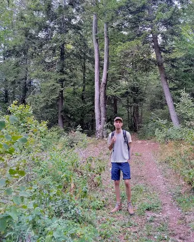

Hello, I’m Diogo.
This is my journal, an archive for illustrations, and a sandbox for learning web development.
Currently
Inspired by the now page movement
- Living in Trieste, Italy
- Looking for local community innitiatives
- Going to the market at S. Antonio’s public square most Saturdays
- Preparing to renovate an apartment
Interests
- Digital archives
- Visual design history
- Small, indie web
- Solutions journalism
Job
I design science communication materials for projects funded by the European Union.
Where else to find me on the web
- Are.na profile
- Internet Archive favourites
- Bandcamp music collection
How we can talk
You can send an email to diogo.fm.matias@gmail.com.